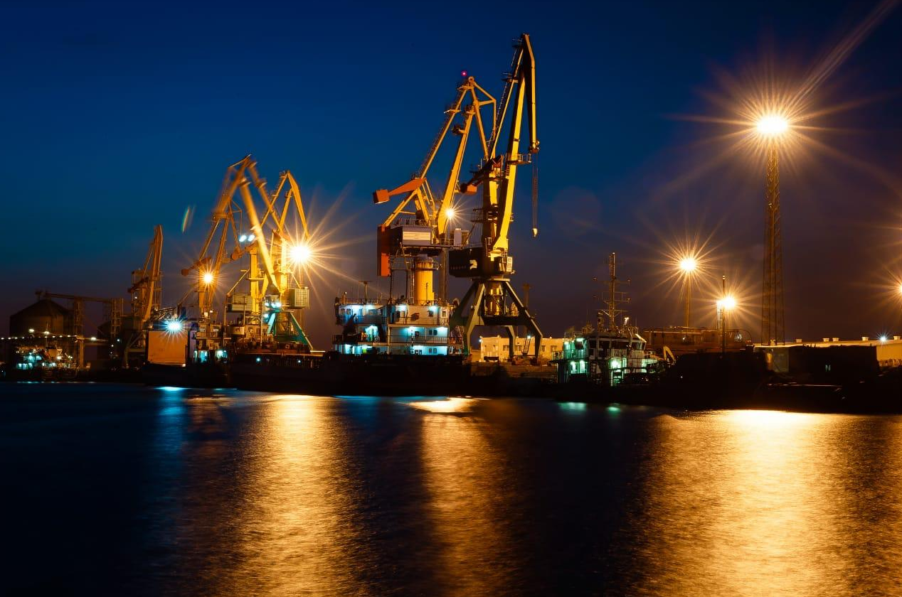

Логистика в сердце
Каспийского региона
ТОО «FERRY MANAGEMENT» — комплексные транспортно-логистические решения в регионе Каспийского моря с 2010 года.
Компания основана в 2010 году в городе Актау и специализируется на перевозках в регионе Каспийского моря и по международным транспортным коридорам между Азией и Европой. За 15 лет работы мы выстроили устойчивые партнёрские отношения с морскими портами Казахстана, Азербайджана, Грузии и Турции.
С апреля 2023 года располагаем собственным складом временного хранения (СВХ) в промышленной зоне №6 города Актау с круглосуточным видеонаблюдением, зоной таможенного досмотра и весовым оборудованием. Прямое примыкание к ж/д подъездному пути и автомобильной эстакаде позволяет работать без перевалки и простоев.
Команда — это специалисты с опытом работы в морских портах, на железной дороге и в таможенной сфере. Мы знаем особенности региона на практике и сопровождаем груз на каждом этапе маршрута.